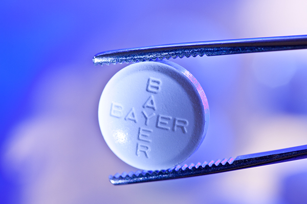
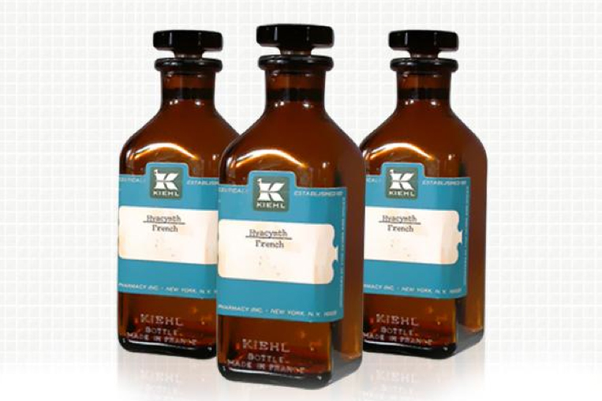

홈 > 브랜드 매거진 > 니베아
니베아
니베아는 헬스·제약 브랜드로, 전문성, 안정성, 접근성, 규제 환경이 브랜드 신뢰를 구성하는 영역입니다.
산업 분야 헬스·제약 · 공개 등급 편집 검수 · 브랜드 평가 4.7 ★


한눈에 보는 브랜드
니베아는 헬스·제약 브랜드입니다. 전문성, 안정성, 접근성, 규제 환경이 브랜드 신뢰를 구성하는 영역으로 분류되며, 브랜드명과 업종, 운영 국가, 공개 로고 여부를 함께 보며 사전 항목의 기본 맥락을 확인할 수 있습니다.
브랜드 관점
니베아 항목은 단순한 이름 목록이 아니라 헬스·제약 시장 안에서 어떤 역할을 하는지 읽기 위한 기준점입니다. 제품·서비스 범위, 유통 방식, 시각 아이덴티티, 시장 포지션을 함께 비교하면 같은 산업의 다른 브랜드와 차이가 선명해집니다.
시작과 성장
니베아(NIVEA)는 독일 화장품 기업 바이어스도르프(Beiersdorf)가 운영하는 대표적인 스킨 케어 브랜드이다. 1911년 최초로 유화제를 개발해 첫 니베아 크림을 세상에 선보인 이래로, 100년이 넘는 시간 동안 한결같이 사랑받아 온 합리적인 브랜드이다.
브랜드 아이덴티티
좋은 제품을 합리적인 가격으로 판매해 온 니베아는 '블루 아젠다(Blue Agenda)‘라는 자체적인 브랜드 비전을 가지고 있다. 상황에 맞는 유연한 브랜드 전략을 효율적으로 실행하여 소비자와의 친숙한 관계 및 신뢰감 형성을 목표로 한다.
제품과 서비스
니베아는 크림 출시 이후 계속해서 제품 라인을 확장해 왔다. 현재 페이스 케어, 선 케어, 데오드란트, 바디 케어, 립 케어, 맨 케어, 베이비 케어, 헤어 케어 등 다양한 카테고리, 500가지 이상의 제품들을 판매하고 있다.
현재 상태
산업: 헬스·제약
타임라인
BI/CI 변천사
함께 읽을 브랜드

헬스·제약 · 편집 검수아스피린아스피린는 헬스·제약 브랜드로, 전문성, 안정성, 접근성, 규제 환경이 브랜드 신뢰를 구성하는 영역입니다.
 헬스·제약 · 편집 검수캠퍼
헬스·제약 · 편집 검수캠퍼캠퍼는 헬스·제약 브랜드로, 전문성, 안정성, 접근성, 규제 환경이 브랜드 신뢰를 구성하는 영역입니다.

헬스·제약 · 자료 기반키엘키엘는 헬스·제약 브랜드로, 전문성, 안정성, 접근성, 규제 환경이 브랜드 신뢰를 구성하는 영역입니다.
Miles는 2023년에 기록된 Health & Wellbeing 계열의 브랜드 아이덴티티 사례입니다. Buddy buddy가 아이덴티티 작업의 디자이너로 기록되어...
When는 2025년에 기록된 Health & Wellbeing 계열의 브랜드 아이덴티티 사례입니다. Universal Favourite가 아이덴티티 작업의 디자이너...
Framework는 2024년에 기록된 Health & Wellbeing 계열의 브랜드 아이덴티티 사례입니다. Franklyn가 아이덴티티 작업의 디자이너로 기록되어...
Pelago는 2023년에 기록된 Health & Wellbeing 계열의 브랜드 아이덴티티 사례입니다. A Line Studio가 아이덴티티 작업의 디자이너로 기록...
TWYG는 2024년에 기록된 Health & Wellbeing 계열의 브랜드 아이덴티티 사례입니다. Seachange가 아이덴티티 작업의 디자이너로 기록되어 있습니...